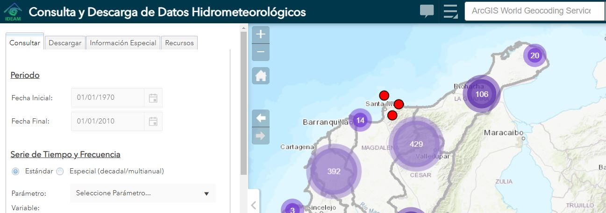
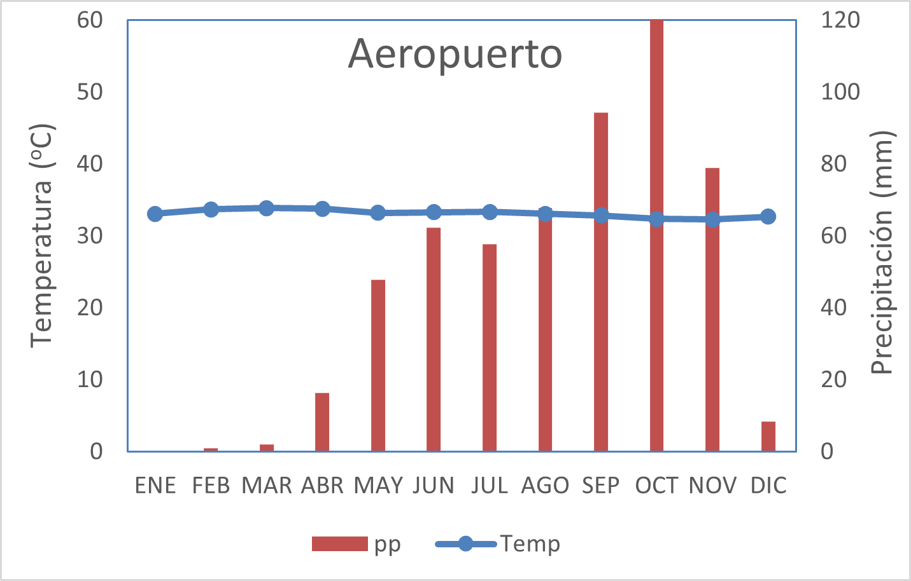
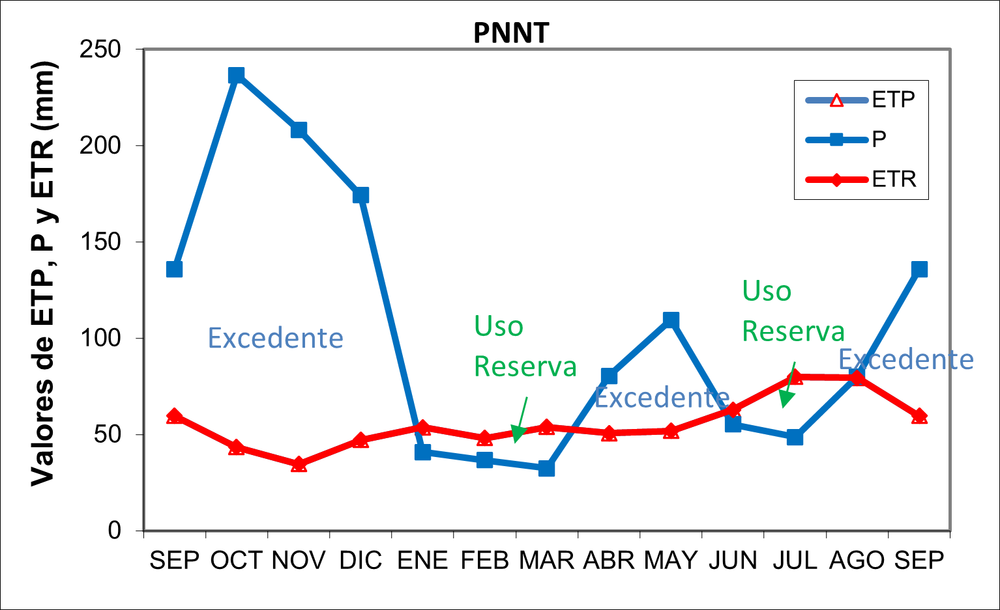

| No | Nombre.de.la.Estación | Años.de.observación | Periodicidad.de.la.información. |
|---|---|---|---|
| 1 | Aeropuerto Simón Bolívar* (Apto) | 1980 - 2023 | Mensual |
| 2 | San Lorenzo (SLrzo) | 1980 – 2023 | Mensual |
| 3 | Parque Nacional Nat. Tayrona (PNNT) | 1980 - 2023 | Mensual |
Taller5. A. Climático

Introducción
El clima puede definirse como el conjunto de parámetros atmosféricos que predominan en un lugar determinado (Ecosistema, Paisaje, Región, etc.). Estos parámetros generan un conjunto de condiciones determinantes para diversos servicios ecosistémicos, como en la ganadería, la recreación o la agricultura. De igual forma, el clima se constituye en el factor del medio físico que más influye en la distribución de los organismos de los ecosistemas. El clima hace que una región geográfica en particular sea una selva tropical, un bosque sub-xerofítico, un páramo, entre otros tipos de ecosistemas.
Precipitación. Corresponde a la cantidad de lluvia expresada en mm, en donde un mm de precipitación equivale a un litro de agua/m2. Algunos indicadores de este parámetro son la precipitación mensual (ppm) que representa la suma de precipitaciones promedio diarias. La precipitación media mensual multianual (pmm) es el resultado de promediar a las precipitaciones mensuales por varios años.
Temperatura. Se considera a la temperatura, como la cantidad de calor que llega a la superficie de la tierra. La temperatura media mensual es el promedio de las temperaturas medias diarias, y las temperaturas máxima media y mínima media son el promedio de las temperaturas máximas y mínimas diarias.
De forma similar a la precipitación, la temperatura media anual es el promedio de las temperaturas medias mensuales y la temperatura media mensual multianual es el promedio de las temperaturas para el mes en cuestión a lo largo del período de tiempo estudiado.
Objetivo del taller
Aprender el manejo de la plataforma üìàdhime utilizada por el IDEAM, como repositorio de datos climáticos de nuestro pa√≠s.
Desarrollar destrezas en el procesamiento de datos en Excel, para la tabulación, uso de tablas dinámicas, el el procesamiento eficiente de información climática.
Incorporar herramientas de análisis climático como son los climatogramas, índices de aridez, los modelos de balance hídrico, el análisis de biomas y de formaciones vegetales, asociadas a datos climáticos.
Desarrollar capacidades para la interpretación y el análisis de datos climáticos en contextos ecológicos y ambientales, para un mejor entendimiento de nuestro contexto ambiental.
Procedimiento del taller
Nota: Previo a la sesi√≥n del taller de c√≥mputo, es necesario que revisen el video de la clase en donde se explica el procedimiento (ver üé•enlace del video), el d√≠a de la sesi√≥n, el docente evaluará la revisi√≥n que se haya hecho de ese material. Esta informaci√≥n tambi√©n se puede consultar en los videos de la semana que están en el repositorio del docente (ver üìÉenlace del repositorio).
Paso 1. Descarga de datos del IDEAM

Se realizará un entrenamiento en la sala de c√≥mputo, orientado a la descarga de datos de la plataforma üìàdhime utilizada por el IDEAM. Las variables a descargar para los periodos de 1993 a 2024 son:
- La temperatura máxima media mensual de tres estaciones que se referencian en la tabla 1, las cuales presentan un contraste espacial y altitudinal y que se encuentran en lugares cercanos a Santa Marta.
- La precipitación total mensual de las mismas estaciones metereológicas.
*Datos promedios totales mensuales, dependiendo de su disponibilidad.
Los archivos generados (extensi√≥n *.csv) serán guardados en una carpeta de trabajo en el escritorio del computador, titulada: ‚Äútaller_datos_climáticos_eco1‚Äù. All√≠ debe reposar un formato para la tabulaci√≥n y procesamiento de los datos, titulado: ‚Äúformato.datos.xlsx‚Äù (üìàdescargar), en donde se pegarán los datos de temperatura y de precipitaci√≥n.
Paso 2. Tabla dinámica
A continuación, se construirán dos tablas dinámicas: una para los datos de precipitación y otra para los datos de temperatura. El objetivo será, extraer los promedios mensuales multianuales, para pegarlos en la pestaña del climatográma e índice de aridez de Lang.
Paso 3. Resultado 1 - Climatograma e índice de Lang

En esta pestaña se realizará el procedimiento indicado para la construcción del climatograma e índice de aridez de Lang, de cada estación. *El procedimiento llega hasta la elaboración, pero cada estudiante deberá investigar en qué consiste cada uno de estos insumos y discutir los resultados obtenidos.
Paso 4. Resultado 2. Balance hídrico

Para este procedimiento, se cuenta con una plantilla en donde se requiere incluir los datos de temperatura y de precipitaci√≥n promedio multianual, utilizadas en el resultado anterior, junto a los datos de brillo solar, que pueden descargarse en google (buscar: Anexo Promedios mensuales de brillo solar üìàdescarga). A partir de ello se construyen los modelos gráficos de balance h√≠drico, en donde se pueden viasualizar periodos de recargas, deficit, excedentes o uso de reservas de agua en los lugares evaluados.
Paso 5. Resultados 3 y 4. Biomas, pisos térmicos y formaciones vegetales

Con los datos de temperatura, de precipitación promedio multianual y de evapotranspiración real, utilizadas en los resultados anteriores, se asociarán en las tablas referenciadas en el resultado 3, para clasificar las zonas evaluadas a su bioma, piso térmico y formación vegetal correspondiente. Finalmente en el resultado 4, se realizará la tabulación que resume a todos los insumos calculados.
Los pasos 1 a 5, deben revisarse previo a la sesi√≥n de c√≥mputo, en el m√≥dulo de videos del repositorio (üé•enlace), especificamente en el video üé•Organizaci√≥n de los datos climáticos, intentar realizar el ejercicio en casa, para avanzar de forma más eficiente en esta sesi√≥n de c√≥mputo. Para las tablas citadas en este paso, se puede reforzar el componente te√≥rico con los referentes bibliográficos de este taller (Espinal (1977), Halffter & Ezcurra (1992), Tamar√≠s-Turizo & L√≥pez-Salgado (2006)).
Paso 6. Pautas del taller en casa

Para la entrega y socialización (si el tiempo lo permite se socializa) del taller, cada grupo (máximo 4 estudiantes) debe seleccionar 3 estaciones diferentes a las de la sesión de cómputo (preferiblemente que sean diferentes a los otros grupos) y entregar un documento en pdf (máximo 5 páginas) que incluya a los procedimientos (paso a paso) vistos en el taller de cómputo y en el repositorio del docente (videos de este taller). Entregar los cálculos en el formato de Excel, como archivo complementario.
Preparar máximo 5 diapositivas para socializar los resultados (duración de la presentación de máx. 8 minutos).
La valoración de esta actividad ponderará los siguientes aspectos:
Trabajo realizado en la sala de cómputo.
La puntualidad en la entrega del informe y de la sustentación del trabajo (en caso de ser posible).
Todas las tablas y figuras deben tener su leyenda numerada y adicionalmente un párrafo de análisis de los resultados.
Incorporar en el análisis, elementos del contexto de cada localidad evaluada, en cuanto a las condiciones ecológicas y/o ambientales asociadas al clima y resto de aspectos evaluados.
Referencias bibliográficas
Espinal, S. (1977). Zonas de vida o formaciones vegetales de Colombia: Memoria explicativa sobre el mapa ecol√≥gico. (üìñenlace)
Halffter, G., & Ezcurra, E. (1992). La diversidad biol√≥gica de Iberoam√©rica (Vol. 1). CYTED-D, Programa Iberoamericano de Ciencia y Tecnologia para el Desarollo, Instituto de Ecologia, AC, Secretaria de Desarrollo Social. (üìñenlace)
Tamar√≠s-Turizo, C. E., & L√≥pez-Salgado, H. J. (2006). Aproximaci√≥n a la zonificaci√≥n climática de la cuenca del r√≠o Gaira. Intropica, 69-76. (üì∞enlace)